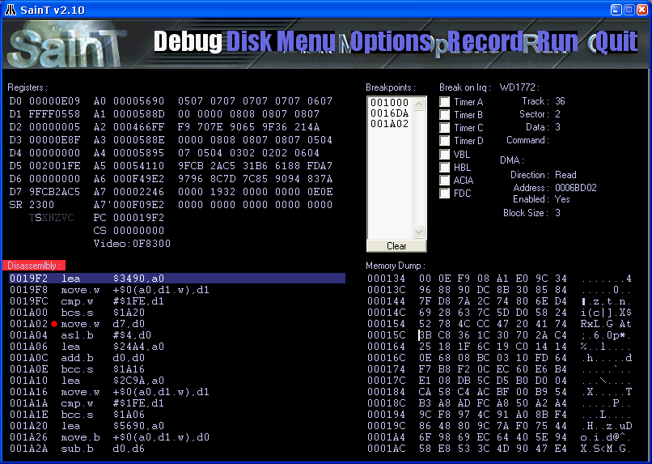

As all emulators, SainT has a lots of compatibility problem. If you're a programmer, you can help us to track nasty CPU or timing bugs. You can use the debugger to give us ideas about some demo or games crash.
Just click on the "Debug" logo at top of the screen, and you should get that page:

This is standard 68000 registers. In supervisor mode, A7' is the user stack pointer. The CS register is the "Cycle Counter" and tells you at wich cycle you are from the last VBL. That counter is reseted each VBL.
You can change focus between Disassembly and MemoryDump window simply by clicking on it. (Please notice sometimes you have to change focus by clicking on memorydump then disassembly, because of a nasty focus bug we have to fix)
SainT offer three types of breakpoints:
- Classic code breakpoint: Simply click between the adress and instruction to add or remove breakpoints. (see the screeshot). A red dot indicate a breakpoint is valid. To run the program using breakpoints, simply press F5 key.
- Interrupt breakpoint: You can activate some interrupt breakpoints by clicking on various check-box (Timer A/B/C/D, ACIA, etc.). As always, run the program using F5 to use that feature.
- Time breakpoint: Use the "T" key in the disassembly window. Very nice feature: enter a number of NOPs after the VBL to break the program. For exemple, if you want to see a upper border routine, just enter 4224 (33*128). Warning: enter the time-breakpoint in "nop" (4 cycles) and in decimal.
Display disassembled code. You can use cursor key. Here are the usefull keys:
- F6: Step into
- F7: Step over
- F8: Skip instruction (not executed)
- G : Go to adress
- F5: Run the emulator in "debug mode" (slower but breakpoints are actives)
- T : Cycle breakpoint